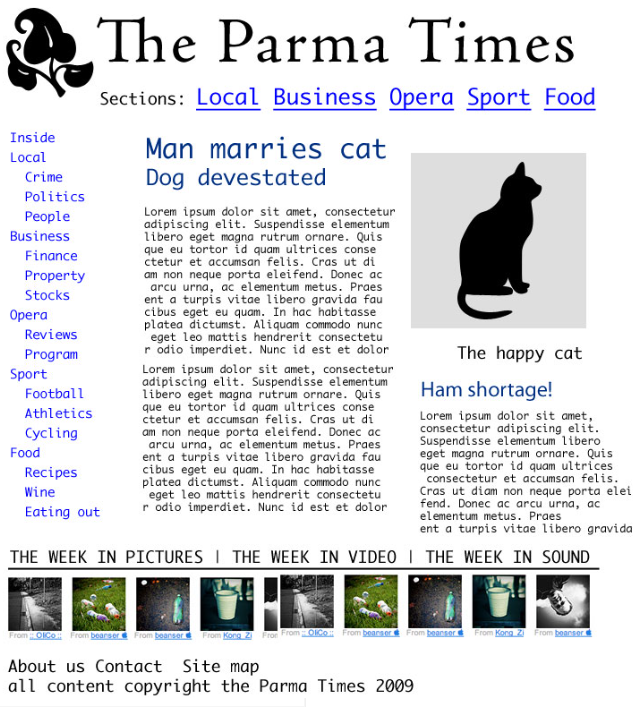

Web Programming
Andreas Dranidis
What is HTML5?
- The latest revision of the HTML standard (originally created in 1990)
- Its core aims to improve the language with support for the latest multimedia while keeping it easily readable by humans and consistently understood by computers and devices
- HTML 5 ≈ HTML 5 + CSS 3 + Javascript = Rich Internet Applications (RIA)
Who is developing HTML 5?
- We all know that a certain degree of structure is needed and somebody clearly needs to be in charge of the specification of HTML 5. That challenge is the job of two important organizations:
- WHATWG Web Hypertext Application Technology Working Group: Founded in 2004 by individuals working for browser vendors Apple, Mozilla, Google, and Opera, WHATWG develops HTML and APIs for web application development & provides open collaboration of browser vendors and other interested parties
- W3C World Wide Web Consortium: The W3C contains the HTML working group that is currently charged with delivering the HTML 5 specification
- Latest working draft at W3C: w3c.github.io/html/
Goals of HTML5
- New features should be based on: HTML, CSS, DOM, and Javascript
- Develop practical new features:
- reduce the need for external plugins (like Flash)
- more markup to replace scripting
- Semantic markup in order to have more readable code
- Ensure backwards compatibility
- Define robust error handling
- Device independent
All HTML5 documents must start with a document type declaration
Older doctype for HTML 4.01 Strict
- <html>
- This tag signals that from here on we are going to write in HTML code.
- <head>
- This is where all the metadata for the page goes — stuff mostly meant for search engines and other computer programs.
- <body>
- This is where the content of the page goes.
Tags & Attributes
-
Tags are used to mark up the start of an HTML element and they are
usually enclosed in angle brackets. An example of a tag is:
<h1>.
- Most tags must be opened <h1> and closed </h1> in order to function.
- There are also self closing tags which are also alternatively known as void tags, empty tags, singletons tags, etc. i.e these tags do not have contents and also can not have any child.
- A few examples of self closing tags are <img />, <input />, <br />, <hr />, etc.
Tags & Attributes
- Attributes contain additional pieces of information. Attributes take the form of an opening tag and additional info is placed inside.
-
An example of an attribute is:
-
In this instance, the image source (src) and the alt text (alt)
are attributes of the
tag.
Inside the <head> tag
- <title>
- This is where we insert the page name as it will appear at the top of the browser window or tab.
- <meta>
- This is where information about the document is stored: character encoding, name (page context), description.
- <script>
- This is where we embed executable code or data; this is typically used to embed or refer to JavaScript code.
- <style>
- This is where we insert style information for a document, or part of a document. It contains CSS, which is applied to the contents of the document containing the <style> element.
Commonly used HTML elements
- <p>
- creates a new paragraph. We place all of our regular text inside this element.
- <h1>, <h2>, <h3>, <h4>, <h5>, <h6>
-
<h1> and <h2> should be used for the most important
titles, while the remaining tags should be used for sub-headings
and less important text.
Search engine bots use this order when deciphering which information is most important on a page. - <a>
-
The first part of the attribute points to the page that will open once the link is clicked. Meanwhile, the second part of the attribute contains the text which will be displayed to a visitor in order to entice them to click on that link. - <img>
- Display images. Much like the <a> anchor element, <img> also contains an attribute. The attribute features information for your computer regarding the source, height, width and alt text of the image.
Commonly used HTML elements
- <ol>, <ul>, <dl>
- In web design, there are 3 different types of lists which you may wish to add to your site. Ordered Lists, Unordered Lists and Definition Lists. Inside the <ol> and <ul> tags we list each item on the list inside <li> </li> tags. Inside the <dl> we use <dt> for the "term" and <dd> for the definition.
- <strong>, <i>, <u> and more...
- These elements help us to control the text or make it appear in a certain way.
Block and Inline Elements
- Every HTML element has a default display value, depending on what type of element it is.
- A block-level element always starts on a new line, and the browsers automatically add some space (a margin) before and after the element.
- An inline element does not start on a new line. An inline element only takes up as much width as necessary.
I am a paragraph element (I am a span element and I am an inline element) and I am a block element
Click meLet's talk about structure

Let's talk about structure
Can you spot any problems regarding each of the above "design" examples?
Imagine you are a machine crawling through a website. Is any of the above helpful to identifying the related content?
Semantic Markup
- Google analyzed millions of pages to discover the common ID names for DIV tags and found a huge amount of repetition.
- For example, since many people used DIV id="footer" to mark up footer content, HTML5 provides a set of new elements that can be used in modern browsers right now.
- One content type that contains many new HTML5 elements is the sectioning content type.
- HTML5 defines a new semantic markup to describe an element’s content.
- Using semantic markup doesn’t provide any immediate benefits, but it does simplify the design of your HTML pages, and search engines can definitely take advantage of these elements as they crawl and index pages.
New Features at a Glance
- Features designed to enrich the semantic content of documents
- Examples include <section>, <article>, <header>, and <nav>
- Other new attributes have been introduced for the same purpose, while some elements and attributes have been removed. Some elements, such as <a> and <cite> have been changed, redefined or standardized.
- HTML5 defines a new semantic markup to describe an element’s content.
- Using semantic markup doesn’t provide any immediate benefits, but it does simplify the design of your HTML pages, and search engines can definitely take advantage of these elements as they crawl and index pages.
New Semantic Elements
- <header>
-
The header element represents a group of introductory or
navigational aids. A header element is intended to usually contain
the section’s heading (an h1–h6 element or an hgroup element).
The header element can also be used to wrap a section’s table of contents, a search form, or any relevant logos. - <footer>
-
The footer element represents a footer for its nearest ancestor
sectioning content or sectioning root element.
A footer typically contains information about its section such as who wrote it, links to related documents, copyright data, and the like.
Footers don’t necessarily have to appear at the end of a section, though they usually do.
When the footer element contains entire sections, they represent appendices, indexes, license agreements, and other such content.
New Semantic Elements
- <section>
-
The section element represents a generic document or application
section. A section, in this context, is a thematic grouping of
content, typically with a heading.
Examples of sections would be chapters, the various tabbed pages in a tabbed dialog box, or the numbered sections of a thesis.
A Web site's home page could be split into sections for an introduction, news items, contact information. - <article>
-
The article element represents a component of a page that consists
of a self-contained composition in a document, page, application,
or site and that is intended to be independently distributable or
reusable.
This could be a forum post, a magazine or newspaper article, a Web log entry, a user-submitted comment, an interactive widget or gadget, or any other independent item of content.
New Semantic Elements
- <nav>
-
The nav element represents a section with navigation links.
Not all groups of links on a page need to be in a nav element - only sections that consist of major navigation blocks are appropriate for the nav element.
For example, it is common for footers to have a short list of links to various pages of a site, such as the terms of service, the home page, and a copyright page. Footer element alone is sufficient for such cases, without a nav element. - <aside>
-
The aside element represents a section of a page that consists of
content that is tangentially related to the content around the
aside element, and which could be considered separate from that
content.
Such sections are often represented as sidebars in printed typography.
The element can be used for typographical effects like pull quotes or sidebars, for advertising, for groups of nav elements, and for other content that is considered separate from the main content of the page.
User input
- The <input> tag specifies an input field where the user can enter data.
- The <input> element can be displayed in several ways, depending on the type attribute.
- Tip: Always use the <label> tag to define labels for <input type="text">, <input type="checkbox">, <input type="radio">, <input type="file">, and <input type="password">.
- <input type="button">
- <input type="checkbox">
- <input type="color">
- <input type="date">
- <input type="datetime-local">
- <input type="email">
- <input type="file">
- <input type="hidden">
- <input type="image">
- <input type="month">
- <input type="number">
- <input type="password">
- <input type="radio">
- <input type="range">
- <input type="reset">
- <input type="search">
- <input type="submit">
- <input type="tel">
- <input type="text"> (default value)
- <input type="time">
- <input type="url">
- <input type="week">